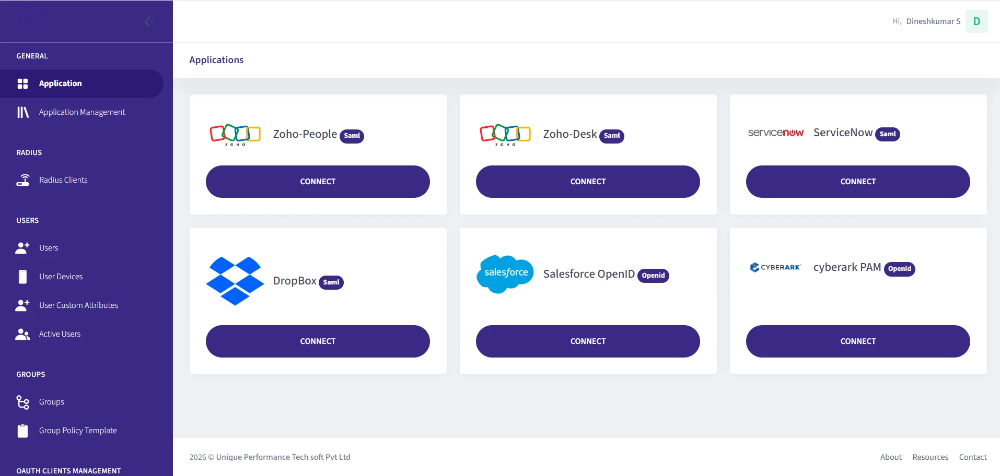

Access Manager
Enterprise Access Management for Modern & Legacy Applications
Secure access across modern, legacy, cloud and on-premises applications with SSO, MFA, passwordless authentication and adaptive access controls.

The problem
Secure Identity and Access Across Your Enterprise
Disconnected apps, legacy systems and inconsistent access policies create security gaps. Access Manager centralises authentication, access control and user lifecycle management.
SSO & Identity Federation
One secure login to applications, with centralised policy.
Federate access across SAML, OIDC, OAuth2 and RADIUS. Users authenticate once to reach authorised applications while security teams manage authentication policies and access activity centrally.
- SAML 2.0, OIDC, OAuth2 and RADIUS out of the box
- RADIUS brings VPNs and network devices under the same policy engine
- Per-application session and assurance policies
Adaptive Multi-Factor Authentication
Stronger authentication when risk increases.
Use WebAuthn, FIDO2, push, TOTP, SMS, email or phone verification. Apply authentication requirements by application, user role and access context.
- WebAuthn passwordless: biometrics and FIDO2 hardware keys
- Push approval with real-time device alerts
- Per-app, per-role and per-context factor requirements
Contextual Access Control
Make access decisions based on who, where, when and how.
Use location, IP, time and device signals in authentication decisions. Create custom Python policies with allow, deny, step-up or notify outcomes.
- Location, network, time and custom-signal policies
- Python-scriptable rules for anything the UI doesn't cover
- Step-up, allow, deny or notify as policy outcomes
Legacy Application SSO
Secure legacy applications without modern federation standards.
Bring legacy web applications into SSO without changing their code. Credentials are vaulted, auto-filled and rotated automatically, with MFA and context policies applied before access.
- Secure credential auto-fill on any web login form
- Automatic password rotation on your schedule
- Legacy access captured in the same audit trail as modern apps
Deep dive: SSO and MFA for legacy applications →
User & Access Management
Manage access across the user lifecycle.
Sync identity data from AD, Entra ID, OpenLDAP and Google Workspace. Manage provisioning, deprovisioning and RBAC across connected applications.
- Real-time Active Directory sync and secure credential routing
- RBAC aligned to departments, roles and applications
- Self-service password reset with policy-controlled verification
API Access Security
Secure machine-to-machine access with auditability.
Use OAuth2 and OIDC to manage scoped API access tokens for internal and partner applications, with token activity captured in the audit trail.
- OAuth2/OIDC token issuance and lifecycle management
- Scoped access for internal and partner APIs
- Token activity in the central audit trail
Deployment
IAM Deployment: On-Premises and Cloud
Deploy Access Manager on-premises or in the cloud based on your infrastructure, security and regulatory requirements.
On-premises
Deploy within your infrastructure with HA/DR and control over identity data and access policies.
Cloud
Deploy IAM in the cloud for scalable access management across users and applications.
Need to size the infrastructure? The Infra Reckoner estimates an on-premises or cloud deployment.
FAQ
Identity & Access FAQs
Can Access Manager run on-premises?
Yes. Access Manager can be deployed as an on-premises IAM solution, with HA and DR support. Cloud deployment is also supported.
Can Access Manager secure legacy applications?
Yes. Access Manager brings legacy web applications into SSO without modern federation, with secure credential handling, password rotation, MFA and contextual access policies.
Which MFA methods are supported?
WebAuthn, FIDO2 security keys, push, TOTP, SMS OTP, email OTP and phone verification are supported, with policies based on application, role and context.
Does Access Manager support VPNs?
Yes. Access Manager supports VPN authentication through RADIUS, allowing MFA and access policies to be applied to VPN access.
Does Access Manager support provisioning?
Yes. Access Manager supports user provisioning and deprovisioning across connected identity sources and applications, helping keep access aligned with user lifecycle changes.
See Access Manager on your applications
Bring your hardest access challenge — a legacy application, VPN without MFA or a mix of cloud and on-premises systems — and see Access Manager in action.